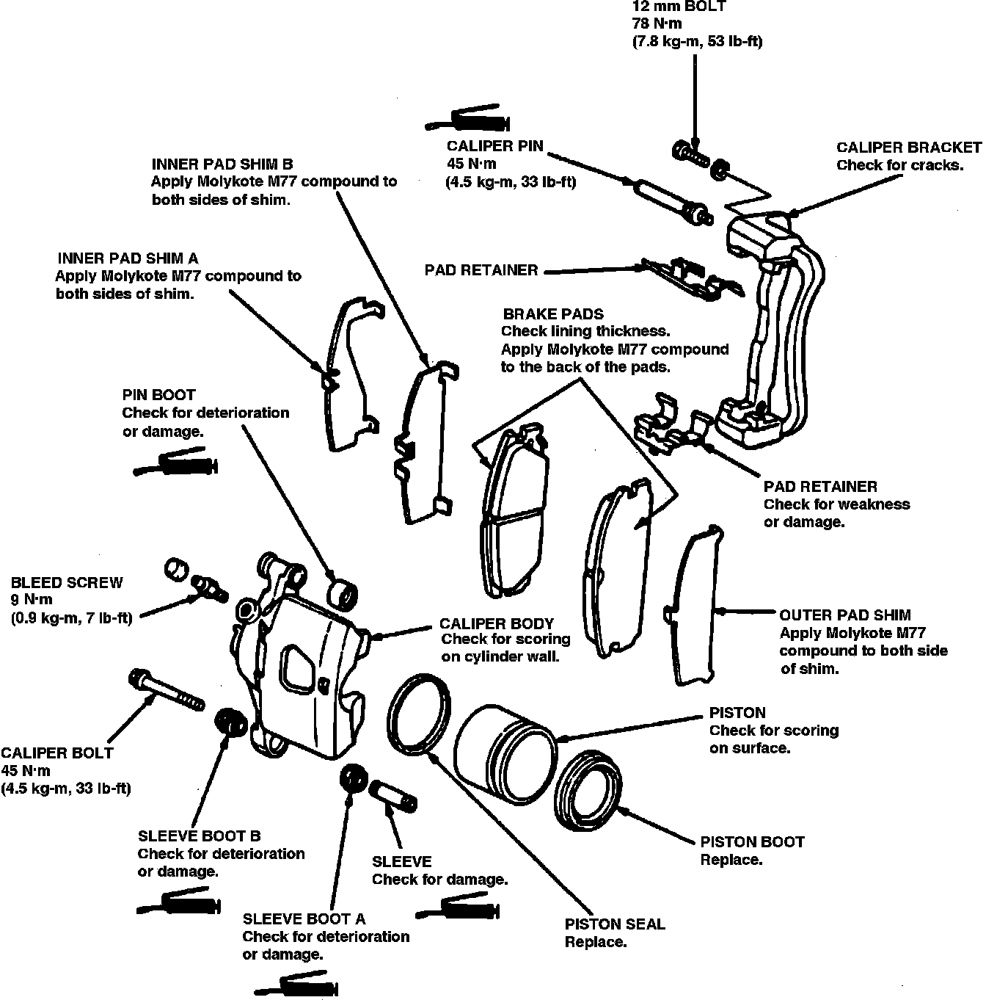

Front
Removal & DisassemblyFig. 1 Exploded View Of Front Disc Brake Assembly:

1. Raise and support front of vehicle and remove wheels.
2. Remove banjo bolt and disconnect brake line from caliper. Secure hose in raised position to prevent leakage.
3. Remove caliper pin bolt and the caliper, Fig. 1.
4. On Legend & Vigor models, remove pad spring from caliper.
5. On all models, position a block of wood or shop rag in caliper opposite piston, then carefully remove piston by applying compressed air into fluid inlet port. Use only as much air pressure as is needed to remove piston.
6. Remove piston boot and seal.
Assembly & Installation
1. Clean caliper bore and piston with brake fluid and inspect for excessive wear or damage.
2. Apply suitable grease to new piston seal, then install the seal in cylinder groove.
3. Install piston boot, then apply clean brake fluid to piston and cylinder and install piston. Ensure dished end of piston faces inward.
4. On Legend models, install pad spring in caliper.
5. On all models, install caliper in reverse order of removal.